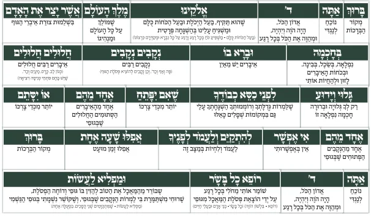

בעמוד זה (4)

ברכון אשר יצר לקניה
ברכון כיס המעורר את הלב לכוון בברכת אשר יצר מגיע בנוסח ספרד, ועדות המזרח. קול תודה אשר יצר כיס ספרד.pdf קול תו…

שיעורים לשמיעה
לחץ כאן לשמיעת סדרה של 30 שיעורים על ברכת אשר יצר מהרב אברהם כהן מרבני קול תודה שיעורים בקו קול תודה על ברכת א…

שיעורים לצפיה
הרב ישעיהו הבר, הרב מנחם שטיין, הרב חנניה צ'ולק, וד"ר מנחם ברייער - כוחה וחשיבותה של הברכה. סרטון של ארגון דרש…

סיפורים
עלון נפלא על כוחה של ברכת אשר יצר - אשר יצר עלון.pdf סיפור נפלא על כוחה של אשר יצר שהופיע בעלון קול תודה ניתן …